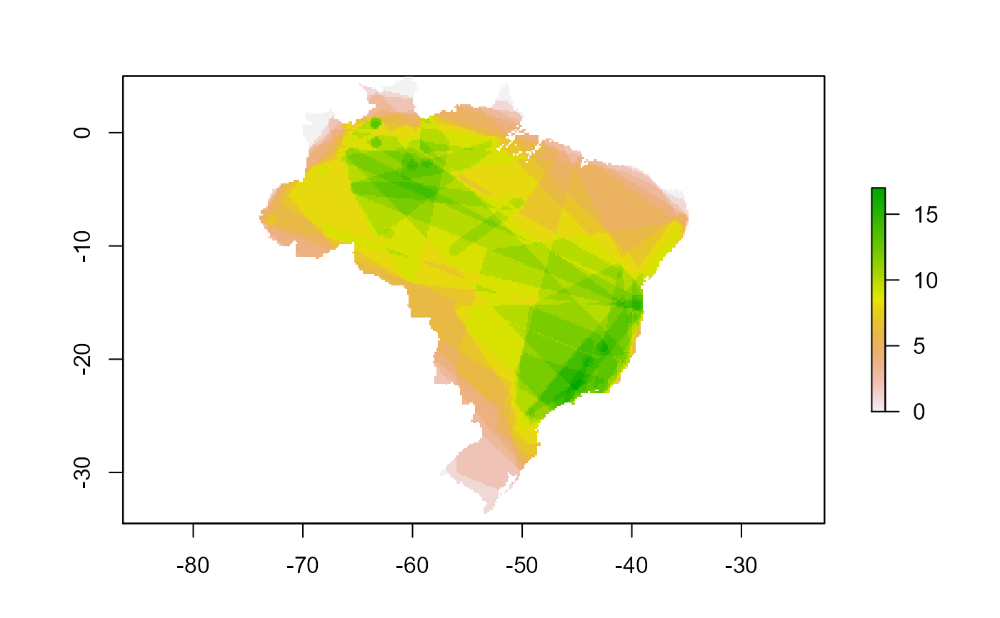
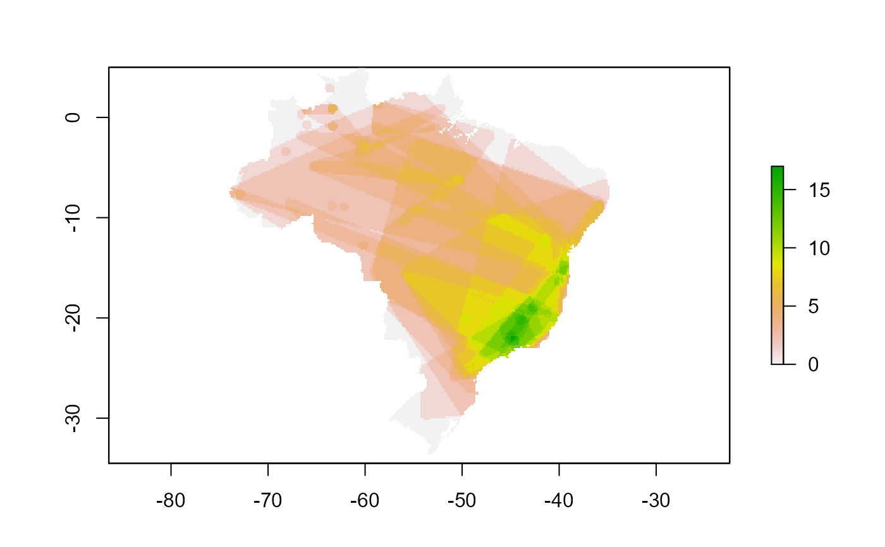
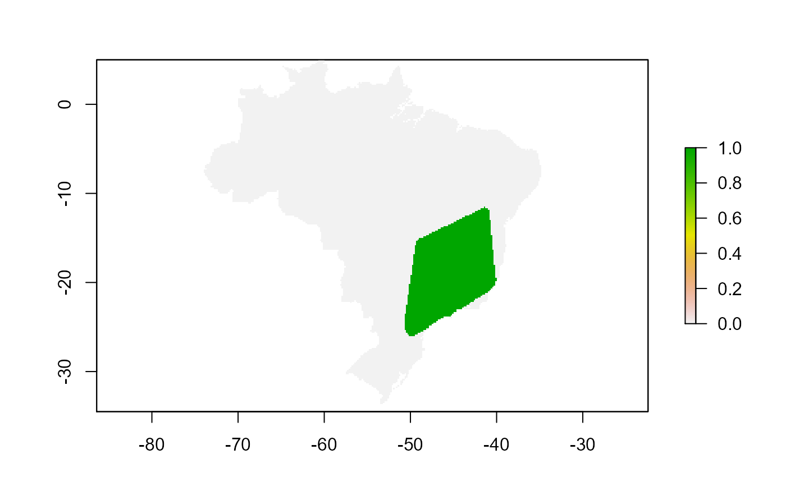
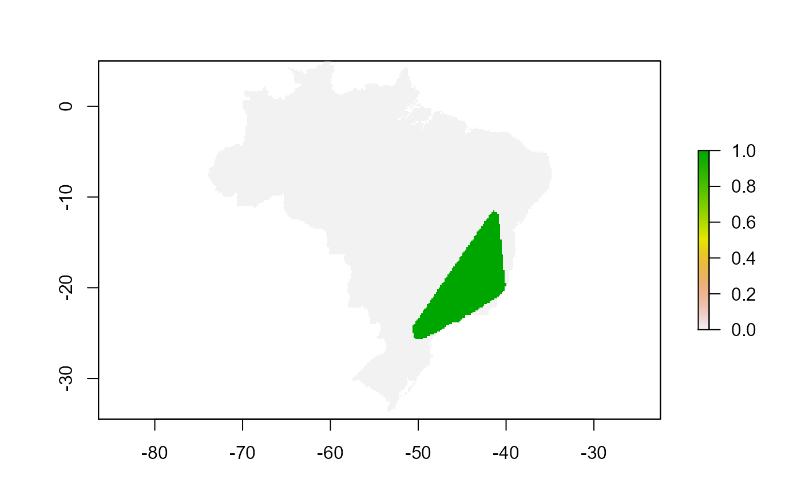

This function compare the area occupied by a species before and after pass through the cleaning procedure according to the chosen level of filter. The comparison can be made by measuring area in the geographical and in the environmental space
clean_eval( occ.cl, geo.space, env.space = NULL, level.filter = c("1_det_by_spec"), r, species = "species", decimal.longitude = "decimalLongitude", decimal.latitude = "decimalLatitude", scientific.name, longitude, latitude )
| occ.cl | data frame with occurrence records information already
classified by |
|---|---|
| geo.space | a SpatialPolygons* or sf object defining the geographical space |
| env.space | a SpatialPolygons* or sf object defining the environmental
space. Use the |
| level.filter | a character vector including the levels in 'naturaList_levels' column which filter the occurrence data set. |
| r | a raster with 2 layers representing the environmental variables. If
|
| species | column name of |
| decimal.longitude | column name of |
| decimal.latitude | column name of |
| scientific.name | deprecated, use |
| longitude | deprecated, use |
| latitude | deprecated, use |
a list in which:
area data frame remaining area after cleaning proportional to the area
before cleaning. The values vary from 0 to 1. Column named r.geo.area
is the remaining area for all species in the geographic space and the
r.env.area in the environmental space.
comp data frame with composition of species in sites (cells from raster
layers) before cleaning (comp$comp$BC) and after cleaning
(comp$comp$AC). The number of rows is equal the number of cells in
r, and number of columns is equal to the number of species in the
occ.cl.
rich data frame with a single column with the richness of each site
site.coords data frame with site's coordinates. It facilitates to built
raster layers from results using rasterFromXYZ
#>library(sp) data("speciaLists") data("cyathea.br") # classify occ.cl <- classify_occ(cyathea.br, speciaLists) nrow(occ.cl)#> [1] 3851# delimit the geographic space # land area data("BR") # Transform occurrence data in SpatialPointsDataFrame spdf.occ.cl <- sp::SpatialPoints(occ.cl[, c("decimalLongitude", "decimalLatitude")]) # load climate data data("r.temp.prec") df.temp.prec <- raster::as.data.frame(r.temp.prec) ### Define the environmental space for analysis # this function will create a boundary of available environmental space, # analogous to the continent boundary in the geographical space env.space <- define_env_space(df.temp.prec, buffer.size = 0.05)# filter by year to be consistent with the environmental data occ.class.1970 <- occ.cl %>% dplyr::filter(year >= 1970) ### run the evaluation cl.eval <- clean_eval(occ.class.1970, env.space = env.space, geo.space = BR, r = r.temp.prec)#>#>#> Warning: package 'sf' was built under R version 4.0.5#>#>#>#>#>#>#>#area results cl.eval$area#> r.geo.area r.env.area #> Cyathea abbreviata 0.79 0.34 #> Cyathea andina 0.00 0.00 #> Cyathea aterrima 0.00 0.00 #> Cyathea atrocastanea 0.91 0.39 #> Cyathea atrovirens 0.21 0.58 #> Cyathea axillaris 0.84 0.98 #> Cyathea bipinnatifida 0.17 0.59 #> Cyathea corcovadensis 0.95 0.95 #> Cyathea cyatheoides 0.00 0.12 #> Cyathea delgadii 0.41 0.79 #> Cyathea demissa 0.00 0.00 #> Cyathea dichromatolepis 0.61 0.96 #> Cyathea feeana 0.06 0.18 #> Cyathea gardneri 0.04 0.18 #> Cyathea glaziovii 0.97 0.97 #> Cyathea hirsuta 0.08 0.68 #> Cyathea hymenophylloides 0.19 0.24 #> Cyathea iheringii 0.00 0.00 #> Cyathea incognita 0.00 0.00 #> Cyathea lasiosora 0.00 0.00 #> Cyathea lechleri 0.00 0.00 #> Cyathea macrocarpa 0.00 0.00 #> Cyathea macrosora 0.01 0.05 #> Cyathea marginalis 0.00 0.00 #> Cyathea mexiae 0.00 0.00 #> Cyathea microdonta 0.52 0.53 #> Cyathea miersii 0.25 0.25 #> Cyathea multiflora 0.01 0.13 #> Cyathea myriotricha 1.00 1.00 #> Cyathea nigra 0.00 0.00 #> Cyathea oblonga 0.00 0.00 #> Cyathea phalerata 0.35 0.70 #> Cyathea pilosissima 0.00 0.00 #> Cyathea platylepis 0.00 0.00 #> Cyathea poeppigii 1.00 1.00 #> Cyathea praecincta 0.24 0.70 #> Cyathea pungens 0.79 0.56 #> Cyathea rufa 0.13 0.38 #> Cyathea spectabilis 0.00 0.00 #> Cyathea subincisa 1.00 1.00 #> Cyathea surinamensis 0.26 0.34 #> Cyathea thysanolepis 0.00 0.00 #> Cyathea tortuosa 0.00 0.00 #> Cyathea traillii 0.00 0.00 #> Cyathea uleana 0.99 0.61 #> Cyathea villosa 0.64 0.69### richness maps ## it makes sense if there are more than one species rich.before.clean <- raster::rasterFromXYZ(cbind(cl.eval$site.coords, cl.eval$rich$rich.BC)) rich.after.clean <- raster::rasterFromXYZ(cbind(cl.eval$site.coords, cl.eval$rich$rich.AC)) raster::plot(rich.before.clean)### species area map comp.bc <- as.data.frame(cl.eval$comp$comp.BC) comp.ac <- as.data.frame(cl.eval$comp$comp.AC) c.villosa.bc <- raster::rasterFromXYZ(cbind(cl.eval$site.coords, comp.bc$`Cyathea villosa`)) c.villosa.ac <- raster::rasterFromXYZ(cbind(cl.eval$site.coords, comp.ac$`Cyathea villosa`)) raster::plot(c.villosa.bc)# }